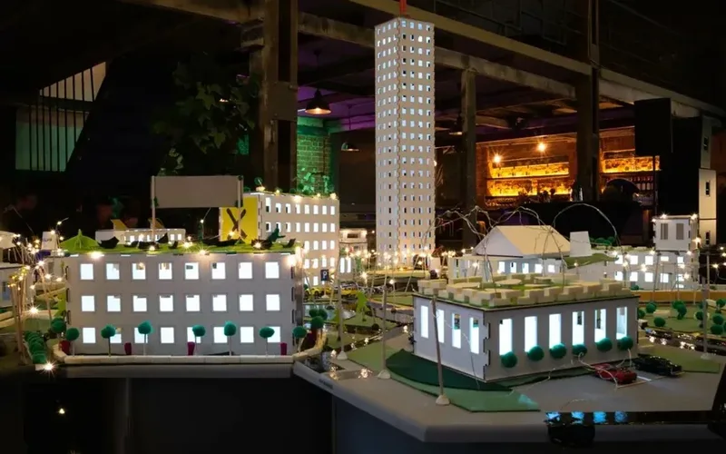
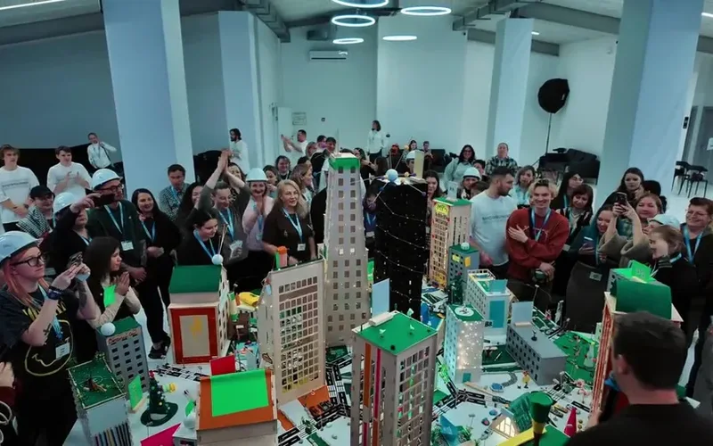
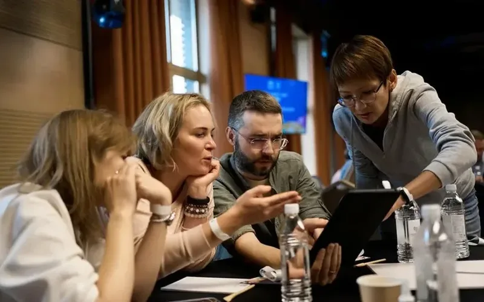

Как выбрать тимбилдинг для новогоднего корпоратива в офисе
С чего начать: замерить помещение, посчитать гостей и решить, сколько времени отвести на игру.
Читать статьюКак спланировать мероприятие, выбрать программу и понять, за что вы платите.
С чего начать: замерить помещение, посчитать гостей и решить, сколько времени отвести на игру.
Читать статью
Мария Варламова разбирает, что влияет на смету и на каких статьях можно сэкономить.
Читать разбор
Коллеги из разных отделов спроектировали 16 районов и за три часа собрали их в один город.
Читать кейс
Как собрать пожелания команды, выбрать площадку и подготовить день мероприятия.
Читать статьюГде провести выезд, что взять с собой и как подготовиться к дождю.
Читать статьюЧто делают участники и чем различаются мастер-класс и кулинарное соревнование.
Читать статьюКак сформулировать задачу команды и подобрать под неё сценарий.
Читать статью